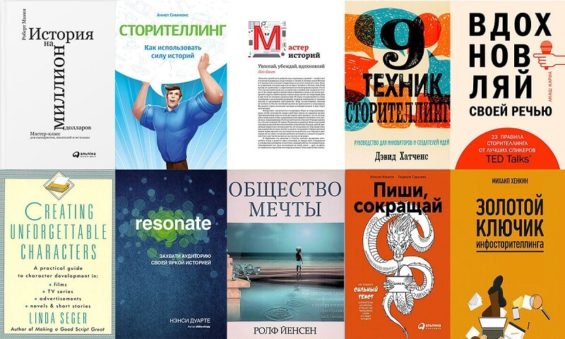

Один из самых удивительных приемов в маркетинге и рекламе – это сторителлинг. Его самое важное качество в том, что он ни капли не похож на маркетинговый прием. Это творчество, которое цепляет, повышает конверсию, двигает бизнес, привлекает трафик и приносит блогерам тысячи лояльных подписчиков.
Что такое сторителлинг и зачем нужен
Сторителлинг (англ. story + telling – рассказывать историю), говоря простыми словами, это умение качественно, интересно, интригующе, понятно рассказывать истории в устном, текстовом или видеоформате. У сторителлинга масса применений. Как явление в чистом виде, он лежит в основе любой художественной литературы и используется всеми людьми в мире в повседневном общении. Это не жанр, а прием, актуальный для любого жанра. Сторителлинг востребован в маркетинге, потому что истории привлекают внимание. Он сумел стать отличной альтернативой прямым продажам, т.к. в отличие от коммерческого текста способен доставить читателю удовольствие.
С помощью сторителлинга можно научиться:
{kind=link}
- Вести интересный блог. Сложно найти человека, который не любит истории. Если вам есть, что рассказать, у вас всегда будет много подписчиков.
- Продавать. Истории могут быть связаны с товаром, услугой или магазином. При хорошей подаче это не кажется попыткой прямой продажи, клиент сам захочет посетить магазин или посмотреть продукт.
- Продвигать себя, как профессионала. Контент-маркетинг особенно эффективен в формате историй на профессиональную тематику, которые показывают ваши знания.
- Укреплять связи с аудиторией. Общение в формате историй становится живым и непринужденным.
- Собирать кейсы. Это тоже разновидность сторителлинга.
История возникновения
Дэвид Армстронг, глава Armstrong International, разработал собственную теорию нестандартного управления подчиненными. Он сделал вывод, что зачитывание инструкций воспринимается людьми довольно плохо, они скучны и быстро забываются. Но если рассказывать истории о том, как другие сотрудники в критических ситуациях применяли эти самые инструкции, подчиненные слушают их с интересом, вникают, запоминают, так им легче получить знания. Вывод превратился в теорию с названием MBSA (Managing By Storying Around). Армстронг посвятил много времени сбору историй о том, как сотрудники действовали в различных ситуациях, и на их основе выпустил книгу «Руководство по работе». Это были инструкции в совершенно новом формате, никогда раньше никто не пытался использовать в управлении ничего похожего. Почему подход Армстронга сработал?
История воспринимается людьми эмоционально, она воздействует через ощущение и вовлекает слушателя или читателя. На этом принципе строится художественная литература: мы сопереживаем герою, непроизвольно становимся соучастниками ситуации, и самостоятельно решаем проблему, будто от этого зависит наше будущее.
Составляющие успешного сторителлинга
Коммерческий или рекламный сторителлинг отличается от художественного лишь незначительными деталями. В основе лежат те же самые приемы и компоненты, что и делает рекламный текст таким ярким, близким, интересным.
{kind=link}
- Идея. Прежде чем писать историю, поймите, чем она будет хороша, почему читатель запомнит ее, в чем суть.
- Главный герой. Это центр истории, с которым читатель сможет отождествить самого себя. Тот, кому сопереживают и стремятся помочь.
- Контекст. Обстоятельства, складывающиеся вокруг героя должны быть острыми, побуждающими героя действовать активно и решительно, чтобы преодолеть препятствия.
- Цель. Любое действие завязано на цель. Цели бывают двух уровней – промежуточная и главная, которую также называют сверхзадачей. Промежуточные – это ступеньки на пути выполнения сверхзадачи. Если выстраивать линию поведения героя, опираясь на этот «скелет», поведение будет цельным, логичным и правдоподобным.
- Сюжет. Сменяющие друг друга события держат зрителя в фокусе, а значит - не дают ему оторваться от рассказа.
- Структура повествования. Отличается от сюжета тем, что относится не к содержанию истории, а к ее подаче. Хорошая структура облегчает восприятие, помогает проникнуть в мир главного героя.
- Завязка. Отправное событие сюжета, с него начинается история.
- Конфликт. Столкновение интересов, предмет борьбы, пружина действия, придающая ему смысл и остроту.
- Нарастающее действие. От завязки до кульминации развитие нарастающее, конфликт усиливается.
- Кризис и кульминация. Кризис – это момент смены приоритетов. Герой разочаровывается в прежних целях, понимает, что ему нужно на самом деле. Итогом кризиса становится кульминация: обновленный или просветленный герой меняет направление действия.
- Нисходящее действие. Нисходящим называется действие от кульминации, итогом которого становится развязка.
- Развязка. Событие, в результате которого судьба героя красиво разрешается, становится известно, чем закончилась история.
- Призыв к действию. Подписаться на канал или рассылку, оставить комментарий, лайк, поделиться с друзьями, совершить покупку, скачать файлы.
Сферы применения
Сторителлинг не ограничен определенным списком сфер применения, его можно использовать везде, где есть запрос на простую и интересную подачу информации. Приведенные ниже списки ориентировочные и даются в качестве примера использования сторителлинга в разных сферах и типах контента.
Сторителлинг популярен в сферах
Бизнес на информации. Курсы, семинары и другие инфопродукты хочется купить, если есть примеры их успешного применения в жизни. Для продвижения инфопродуктов очень важны контент-план, комментарии и истории пользователей.
Детские товары. Любому бренду товаров для детей от 3-х лет следует обзавестись увлекательной легендой бренда или рекламным персонажем, таким как доктор Кролик (Colgate).
Туризм. Туристический объект, о котором написаны книги или сняты фильмы, привлекает большее количество туристов. Истории, связанные с конкретным местом, всегда повышают его популярность. Любая экскурсия сопровождается историями.
Ремонт и строительство. Успехом пользуются истории на тему «как сделать самому» или «как я построил дом своими руками».
Бьюти-сфера. Этот бизнес продвигают бьюти-блогеры, которые часто рассказывают о своем опыте пользования брендовой косметикой или средствами ухода за телом. Лояльность подписчиков обеспечивает товарам быстрое продвижение.
Организация праздников и мероприятий. Люди ожидают от праздника чего-то необычного, а праздничные истории подогревают ожидания. Одна удачно рассказанная история создает атмосферу праздника лучше, чем любое оформление.
Медицина и здоровье. Личная история борьбы с болезнью, применение лечебных методик, диет, препаратов, а также дневники практикующих врачей всегда популярны.
Спорт и фитнес. Это сфера достижений, здесь популярны мотивирующие истории о том, как заурядные люди меняют свою жизнь с помощью спорта.
Типы контента, подходящие для сторителлинга
Косвенная реклама. Зритель привлекся отвлеченным контентом, в ходе просмотра или чтения наткнулся на упоминание целевого продукта.
Прямая реклама. Историю может рассказать потребитель или производитель, или же она может быть полностью выдуманной (сказачной).
Презентация. Способ подать сложную информацию просто – использовать пример выдуманного или реального персонажа.
Пост в соцсети. Социальные сети существуют для того, чтобы мы делились эпизодами своей жизни, здесь использовать сторителлинг уместнее всего, для него даже был создан специальный формат – сториз.
Email-рассылка. От рекламных объявлений быстро отписываются все, кроме ваших постоянных клиентов, которым нужна информация. Но если в рассылке приходит интересный контент, он удержит подписчика.
Виды сторителлинга
Рассмотрим широкую классификацию историй и разновидности повествований от себя.
Общая классификация
- Социальный. Слухи, легенды, сплетни, передаются устно, часто искажаются, но всегда привлекают и интригуют.
- Культурный. Сюжеты, актуальные в культурном контексте. Затрагивают вопросы традиций, морали, веры.
- Необъяснимый. Заведомо непроверяемые рассказы о субъективных переживаниях, о сверхъестественном или о тайном.
- Семейный. Истории из жизни примечательных членов семьи, особенно – далеких предков.
Разновидности историй от первого лица
- Кто я. Истории личного примера вдохновляют, особенно если вы являетесь медийным лицом, крупным руководителем или лидером мнений. Помимо этих случаев, ваша личная история может заинтересовать людей из вашей социальной группы, т.к. вы похожи на них, из ваших достижений они черпают данные о собственном потенциале.
- Зачем я здесь. Истории о намерениях пригодятся при составлении резюме, прохождении собеседования или для презентации товара через самопрезентацию (следом можно рассказать, как товар помогает в достижении целей).
- Мое вИдение или планы. Что произойдет, когда задача будет выполнена, почему это важно и в чем интерес тех, кто вас слушает или читает.
- Ценный опыт. Вы отвечаете на вопрос «зачем мне это» (курс, навык, товар, услуга) на личном примере решения проблемы или достижения желанных результатов.
- Обоснование действия. Например, руководитель придерживается определенной стратегии развития компании. С помощью сторителлинга можно объяснить, почему выбрана именно эта политика.
- Уникальность. Чем моя деятельность или продукция моей компании непохожа на других.
- Привлекательность сотрудничества. Что я хочу сказать моим партнерам или сотрудникам компании, почему работать у нас интересно, а работать с нами - выгодно.
- Ценности в действии. Такие истории показывают воплощение ценностей компании на практике, оживляют их.
Главные правила сторителлинга
Правила не являются ограничениями, сковывающими вашу творческую свободу. Это рекомендации, как не допустить в своей истории ничего лишнего с самого начала, избежать таким образом потери внимания читателя или долгой неприятной редактуры.
{kind=link}
- Герой должен быть интересен аудитории. Максим Ильяхов, автор популярного пособия по копирайтингу «Пиши, сокращай», даже придумал специальный термин для неинтересных героев – «буратинки». Это персонажи, которые никого не могут зацепить и заставить сопереживать, потому что вообще никак не проработаны – просто Саши и Маши, которые что-то зачем-то делают.
- Рассказ не должен быть слишком длинным. Помните, что универсальной для всех случаев длины рассказа не существует, она зависит от многих факторов. Например, от настроя аудитории: если вы даете лекцию, это один настрой, если остановили прохожего на улице – другой, если пишете пост в инстаграм – третий. Для всех случаев длина рассказа будет разная.
- Создайте оригинальный сюжет. Избегайте шаблонов, они приелись и не вызывают интереса. Новый нестандартный сюжет может спасти историю, даже если все остальное в ней провально.
- Финал следует тщательно продумывать. Каждый театральный режиссер и каждый писатель знают, что лучше всего зритель запоминает начало и конец, такова особенность человеческой памяти. Концовка – это впечатление, которое останется у человека от истории на долгое время или забудется через 5 минут.
- Пользуйтесь фигурами речи и другими выразительными средствами. Тут важно не переборщить, рекламный текст не должен по уровню пафоса напоминать древнегреческую трагедию. Однако совсем без художественных средств обходиться тоже нельзя, текст станет сухим, безэмоциональным.
- Добавляйте в сюжет неожиданные события. Чем их больше, тем дольше удастся удерживать внимание аудитории.
- Не навязывайте свое мнение. Рассказывание должно быть беспристрастным, позволяющим слушателю самому делать выводы. Эта свобода – обязательное условие интереса, т.к. любое навязывание вызывает немедленное отторжение.
- Не скупитесь на подробности. Детали придают рассказу точность, правдоподобие, стимулируют воображение.
- Расскажите что-то новое. Это касается не сюжета, а информации, фактов. В идеале читатель благодаря истории должен узнать что-то, чего не знал раньше.
Популярные техники сторителлинга
{kind=link}
- Мономиф. Классический путь героя, его исход из родных мест, скитания и возвращение домой, часто триумфальное.
- Вложенные циклы. Наслоение историй друг на друга, но не хаотичное, а построенное вокруг главного сюжета и усиливающее его.
- Гора. В отличие от мономифа не всегда заканчивается хорошо. Для «горы» характерна скачкообразность эпизодов, в одной «серии» могут соседствовать успех и неудача.
- Начало с середины. Во многих современных фильмах используется этот прием – зритель начинает просмотр сразу с кульминации, а уже потом рассказывается, как герой до этого дошел. Позволяет быстро заинтересовать зрителя.
- Как было и как могло бы быть. Выразительность достигается за счет контраста между существующим и возможным. Отличный прием для мотивационных текстов или роликов.
- Фальстарт. История начинается, разворачивается по предсказуемому пути, но обрывается и начинается снова.
- Сходящиеся идеи. Несколько на первый взгляд не связанных между собой историй постепенно сходятся в одной сюжетной точке.
- Лепестки. Лепестки - это истории, они рассказываются одна за другой, после чего повествование переходит к центральному сюжету.
- Рамка. Множество историй рассказываются в рамках основной. Например, в сказке «Тысяча и одна ночь» рассказываются разные истории (сказки Шахерезады), но в рамках главного сюжета.
Формулы для создания сторителлингов
Две наиболее распространенные классические формулы сторителлинга состоят всего из трех ступеней каждая. Формулы универсальны, но содержат в себе лишь «скелет» или каркас истории. Этот каркас можно дополнять, развивать, усиливать новыми элементами. Вполне допустим и даже приветствуется творческий подход, потому что только благодаря ему формула может стать историей.
Трехступенчатая формула
- Вводная часть. Здесь происходит знакомство с действующими лицами, обстоятельствами и контекстом.
- Противостояние. Раскрывается основная проблема, которая в идеале хорошо согласуется с болью самого читателя.
- Развязка. Происходит разрешение проблемы.
Рассказ, написанный по этой формуле, помогает отождествить себя с героем, обратить внимание на собственные боли и на предлагаемое их разрешение.
Формула Дейла Карнеги
- Инцидент. Реальная или якобы реальная жизненная ситуация, пример.
- Действия. Непосредственное решение проблемы, преодоление трудности.
- Выгода. Что принесло герою решение его проблемы.
В отличие от первой формулы, здесь нет акцента на проблему, основное внимание читателя приковано к решению и результату.
Форматы сторителлинга
Основных форматов мало - всего четыре – видео, баннер, текст, разговорный. Все остальное – разновидности этих четырех.
Баннер. Чтобы рассказать историю, баннеров должно быть несколько. Первый создает интригу, привлекает внимание, последующие развивают сюжет и приводят к развязке. Важное условие – каждый баннер должен быть запоминающимся, создавать желание увидеть следующий, перевернуть страницу.
Видео. Самый удобный в плане выразительности формат. Видео объединяет в себе художественное чтение, дизайнерскую работу, видеоряд, актерскую игру, на видео можно показать текст с иллюстрациями. Благодаря такому многообразию средств, историю можно рассказать даже за несколько секунд. Если вы хотите погрузить зрителя в атмосферу истории, видео – лучший вариант. Подберите подходящую по настроению звуковую дорожку, наложите спецэффекты на видеоряд и смонтируйте. Большое удобство заключается в том, что все это делается на любом современном видеоредакторе, даже в смартфоне.
Текст. Статья – по-прежнему наиболее предпочтительный способ изложения материала. Статью можно оптимизировать для поисковых машин, тогда она будет привлекать трафик. В отличие от видео, которое легче воспринимать, статья более универсальна. Видео может просто не понравиться человеку, но статья не навязывает ему готовый видеоряд, а максимально задействует его собственное воображение.
Разговорный формат. Живой человек рассказывает историю обращаясь к другому человеку или к группе. Сюда относятся аудио и мультимедийный форматы.
Как написать историю правильно – 9 простых шагов
Если вы никогда ранее не писали собственных историй, вот что нужно сделать, чтобы у вас получилось с первого раза:
{kind=link}
- Поймите цель, затем определите предпочтительный тип сценария в зависимости от цели. Например, если вы хотите раскрыть применение продукта разными людьми в разных обстоятельствах, вам не подойдет «мономиф», но прекрасно подойдут «сходящиеся идеи» или «лепестки».
- Определите целевую аудиторию, найдите особенности восприятия. Например, если вы рекламируете товар школьникам, нужно понимать, что они неусидчивы, восприимчивы только к современному языку повествования, не готовы читать слишком длинные тексты, скорее посмотрят видео, чем станут читать статью.
- Выберите формат. Обычно это выбор между видео и текстом. Что именно выбрать, зависит от суммы предыдущих решений, т.к. каждый вариант имеет свои сильные и слабые стороны.
- Сформулируйте основной посыл – что для вас важно в этой истории, о чем именно вы пытаетесь рассказать.
- Определите проблему или боль главного героя. Эта проблема должна перекликаться с болями целевой аудитории, чтобы они видели в главном действующем лице себя и всерьез интересовались решением, которое он найдет.
- Сформулируйте желание, которое должно возникнуть у читателя после прочтения. Желание может быть связано с эмоцией. Например, жалость вызывает желание сделать пожертвование благотворительному проекту.
- Разработайте структуру рассказа. Составьте план повествования - что за чем идет, пока без подробностей, просто последовательность.
- Пишите. Окончательный вариант обычно нужно переписывать или править несколько раз, поэтому не переживайте если сразу не получится как надо. Главная задача – сделать набросок по структуре, затем постепенно наполнять его подробностями.
- Опубликуйте историю на сайте, в блоге, на канале ютуб или в соцсетях.
Сторителлинг в Инстраграм
Поговорим о том, что такое сторителлинг в Инстаграм и почему его стоит выделить в отдельную большую ветку. Дело в том, что продвижение через Инстаграм уже становится маркетинговым стандартом. Именно на этой площадке проводятся самые заметные эксперименты с новыми форматами рекламы.
6 секретов эффективного сторителлинга
- Позвольте оценить персонажа по делам. Не стоит рассказывать о качествах персонажа, дайте ему возможность проявить персональные качества характера практически, в поступках.
- Говорить о чувствах и вызывать чувства – не одно и то же. Высший пилотаж – не называть эмоции по именам, но с помощью прорисовки деталей и выразительных средств создавать такую атмосферу, в которой нужные эмоции возникнут у читателя сами.
- Следите за ритмичностью текста. Главное, что надо знать о ритме – он должен сохраняться, а если и меняться, то плавно. На ритм влияют длина предложений, синтаксис, сложность оборотов, вводные слова, междометия. Если у вас стремительный слог, от которого сложно оторваться, и вы вворачиваете какой-нибудь канцеляризм, читатель об него буквально спотыкается.
- Сделайте действующее лицо неоднозначным. Людям интересны противоречивые люди, такие же, как они сами. На 100% положительный (или отрицательный) персонаж не представляет такого интереса, как смешанный тип характера.
- Рассказывайте естественным языком. Сложный язык мешает наслаждаться, пишите так, будто рассказываете любимые истории лучшему другу за чашечкой кофе.
- Покажите, что герой платит высокую цену. Читатель должен понимать, насколько важны для персонажа его усилия и что он рискует потерять в случае провала.
Виды сторителлинга в Инстаграме
Прогрев. Это некая история преображения – о том, как все было плохо, затем купили товар, и все сразу стало хорошо. Этот прием не самый этичный, с его помощью рекламируют инфопродукты сомнительного качества с расчетом на массовость. Но он работает.
Хайп. Рассказ о спорном поступке, который явно вызовет неоднозначное отношение к рассказчику и спровоцирует активность в комментах. Как и в случае с прогревом – не самый этичный прием, но работает.
Вовлечение. Вопросы об опыте подписчика. «Я сделал то-то и вот что у меня получилось! А вы так пробовали?»
Фокус внимания. Читателю дается затравка побуждающая к целевому действию, например, прочитать пост до конца, подписаться, сделать репост и т.д.
Свой путь. История личного успеха от простого официанта до крутого инвестора, который работает два часа в неделю и мотивирует своим примером окружающих.
Точки контакта. В посте используют ключевые точки с целью привлечь аудиторию со схожими вкусами. Это могут быть бренды одежды или косметики, музыкальное направление, исполнители или конкретные песни, места – модные рестораны или курорты, напитки или блюда, марки автомобилей, герои и т.д.
Особенности сторителлинга в Инстаграме
Упор на визуальный контент. Это приоритет самой соцсети, здесь не бывает длинных текстов, а истории рассказываются чаще через фотографии, карточки и короткие видео.
Карточки в сториз. Идеальное сочетание визуального и текстового контента – новый формат сториз в Инстаграм. Карточки, это картинки с небольшим количеством текста, они одновременно рассказывают историю (текст) и иллюстрируют ее (картинка).
Ограничения и особенности отображения текста. Текст по умолчанию скрыт за кнопкой «еще», поэтому много внимания уделяют заголовку и первому абзацу. На объем текста установлено ограничение 2200 символов.
Шаблоны. Сторителлинг можно создавать по готовым шаблонам, но мы не рекомендуем этого делать, т.к. шаблонные истории настолько надоели людям, их так часто используют в прогревах и другой низкосортной рекламе, что велик риск сразу же испортить себе репутацию.
Не прекращающаяся история. Это прием ведения блога, когда весь контент является частью одной большой истории жизни блогера.
Из чего складывается хороший сторителлинг
Здесь нет отличий от классического сторителлинга, который мы уже разбирали выше. Напомним ключевые моменты:
{kind=link}
- необходимо проработать образ главного действующего лица и обстоятельства, в которых ему предстоит действовать;
- у истории должна быть цель;
- в рассказе должны быть конфликт и сверхзадача;
- интрига должна сохраняться на протяжении всего рассказа;
- герой должен преодолевать постоянно возникающие препятствия – это вопрос качества сюжета;
- история развивается от завязки к кульминации, потом идет на спад к развязке;
- линия поведения должна согласовываться с текущими задачами, которые ведут к сверхзадаче;
- развязка раскрывает перед нами мораль истории, а призыв к действию напоминает о цели прочтения.
Как сделать сторителлинг в Инстраграм – главные выводы
- Не навязывать свое мнение о чувствах персонажа или качествах его характера, а проявлять эти чувства/качества через поступки.
- Держать в голове целевое действие: продажа, подписка, репост, посещение торговой точки.
- Следить за естественностью речи и ритмом повествования.
- Раскрыть личность и обстоятельства, если аудитория знакомится с ними впервые.
- Показать, как развивается сюжет, помочь читателю следить за развитием.
- Раскрыть интересы персонажа, чего он хочет, за что борется.
- Подробно описывать ключевые поступки героя, которые приводят к изменению или разрешению сюжетной линии.
- Объяснить причины конфликта.
- Держать читателя в напряжении с помощью интриги, ожидания, неопределенности.
Сторителлинг в бизнесе
Первое, что нужно понять – как сторителлинг помогает донести ценности бренда. Представьте себе идеальную ситуацию: вы провели анализ рынка, разработали беспроигрышную маркетинговую стратегию, утвердили ценности бренда, продвигаете их, разрабатываете подробную теорию о том, как эти ценности будут воплощаться в жизни покупателя. И… ждете. Но покупателей нет, потому что в ваши теории никто не верит, да и вы сами не скрываете, что никогда не проверяли их на практике. И тут приходит один человек, соглашается за большой гонорар стать кем-то вроде лица бренда и тестировать все на себе самом. Со временем доверие к нему постепенно растет и все больше людей начинают думать как он. Проходит очень много времени, он становится узнаваемым. К тому времени вы уже заплатили ему столько, что продажи окупят эту сумму совсем нескоро.
Того же самого результата, но бесплатно и уже завтра, можно добиться, если придумать себе персонажа-первопроходца и растиражировать его историю.
О чем может быть бизнес-сторителлинг
- Мысли и намерения лидера по развитию компании.
- Личный опыт, впечатления и отзывы сотрудников, раскрытие какой-то части инсайдерской информации через них.
- Герой бренда со своей фирменной легендой.
- Отзывы благодарных клиентов.
- Личная история лидера.
Где можно использовать
- На презентациях, вебинарах, лекциях, встречах.
- В видеоблоге.
- В социальных сетях.
- В материалах сайта компании (лендинг, контент-маркетинг, раздел отзывов, новости).
Пример сторителлинга в командообразовании
Президент компании выступает в роли сильного лидера, рассказывает историю об актуальных задачах и грядущих сложностях. Он прибегает к ретроспективе, показывает похожие сложности в прошлом, отвечает на вопрос, благодаря чему компания смогла их преодолеть. Он указывает на текущие сложности, объясняет, почему компания обходит их или легко преодолевает. Связывая в одну картину прошлый и настоящий опыт, он делает выводы о будущих событиях, демонстрирует их несерьезность, поднимает энтузиазм и командный дух сотрудников.
Как проанализировать и улучшить историю
Когда ваша история уже написана и опубликована, возникает вопрос, как понять, что она работает нужным образом. Есть несколько индикаторов соответствия вашего рассказа ожиданиям. Соберите максимум доступной вам аналитики и попытайтесь на ее основе найти ответ на эти 4 вопроса.
- Кто откликнулся. Были ли это те люди, которых вы ожидали увидеть, для которых вы писали.
- С помощью сервисов аналитики (Яндекс.Метрика, Google Analytics и др.) оцените число дочитываний материала. Обратите внимание на тех, кто не дочитывает, особенно – если их много. Установите с помощью тех же сервисов, на каком месте человек перестает читать. Если большинство результатов выявят один и тот же абзац или предложение, попытайтесь понять, что с ним не так, поэкспериментируйте.
- Делают ли читатели то, о чем вы их просите в призыве к действию. Например, если в призыве у вас подписка, оцените количество новых подписчиков за оцениваемый период и отношение числа просмотров к числу новых подписок за вычетом среднего показателя прироста.
- Какие чувства они стараются описать в своих отзывах, к каким выводам вы сумели их подтолкнуть.
Не думайте, что бывают идеальные статьи со 100% дочитываний и такой же конверсией. Недовольные всегда будут, вам важно выявить недостатки при массовом чтении, поэтому не торопитесь с выводами.
Где брать идеи для сторителлинга
Если вы не писатель, серьезный проект лучше заказать у специалистов, а самому потихоньку набивать руку на небольших пробных заданиях. Обычно, писатели или маркетологи хорошо знают, где брать идеи для сторителлинга. У них есть своя коллекция шаблонов, штампов и схем, о которой никто не знает. Если же вы все же решили попробовать, но столкнулись с отсутствием идей, не расстраивайтесь, вот четыре универсальных способа.
{kind=link}
- Общение с коллегами. Как мы упомянули в начале статьи, Дэвид Армстронг написал целую книгу инструкций на основе общения с подчиненными. Он собирал и обрабатывал истории десятков людей. Поэтому лучший способ найти прототип – общаться с людьми, в чьей практике постоянно что-то происходит. Если в вашей компании таких историй нет, ищите людей в интернете, на профессиональных форумах, тематических сайтах, или вдохновляйтесь от уже готового сторителлинга.
- Повседневная практика. Сложности, с которыми вы сталкиваетесь каждый день, тоже могут послужить отправной точкой для вашей истории.
- Прошлый опыт. Вспомните ваш профессиональный опыт, он наверняка включает в себя разноплановые яркие эпизоды – от оглушительных побед, до громких провалов. Вы можете взять за основу одну из собственных ситуаций. И вовсе не обязательно оставлять ее без изменений, можно провести обработку под актуальные задачи.
- Книги, лекции и курсы. В разделе, посвященном обучению сторителлингу, вы найдете множество книг, лекций и учебных материалов. Все они предлагают готовые идеи для сторителлинга, учат находить или генерировать собственные, помогают заработать на сторителлинге.
6 советов как сделать сторителлинг, если не умеешь сочинять истории
- Начните с поиска места, где всегда можно достать интересную историю. Это может быть отдел в вашей компании, где работают сотрудники, чаще всего контактирующие с людьми. Может быть место, где любят собираться после работы ваши коллеги. Может быть форум или группа ВКонтакте.
- Истории лучше не сочинять, а добывать. Лучший навык для этого – интервьюирование. Если вы добыли хорошую историю, останется только грамотно ее изложить, добавить в блог, а все остальное произойдет само собой.
- Просите привести пример. Слово «примеры» действуют на некоторых людей волшебным образом. Они будут долго чесать затылок, если попросить их рассказать историю, но стоит попросить примеров, сразу же найдется море интересного материала.
- Не просите в превосходной степени. Простой способ поставить интервьюированного в тупик – попросить рассказать самую лучшую, интересную или еще какую-нибудь историю. Лучше попросить рассказать ту, которая запомнилась.
- Давайте собеседнику обратную связь. Это способствует раскрепощению, человек уверен, что его слушают.
- Общайтесь с людьми во время интервью. Постарайтесь стать благодарным слушателем, создайте все условия, чтобы собеседник вошел в раж и увлекся.
- Не пытайтесь собрать в одной истории все идеи сразу, сосредоточьтесь на чем-то одном. Перенасыщение идеями помешает вам раскрыть глубину каждой, а автору - оценить эту глубину.
- Не перегружайте рассказ подробностями. Детали очень важны, но описание деталей должно дополнять основную линию истории, а не оттенять ее.
Ошибки сторителлинга
{kind=link}
- Не полагайтесь только на текст. Иначе вас обойдут конкуренты, которые задействуют в рекламных материалах весь доступный инструментарий – фото, аудио, видео, графику.
- Официальный стиль. Истории никогда не рассказывают официальным языком и канцеляризмами, это процесс общения, неформальный сам по себе. Стремитесь к легкости, естественности, непринужденности речи.
- Не думайте, что размер рассказа и его структура, это второстепенные вещи. Из-за нечеткой структуры читатель теряет внимание, а чрезмерный объем материала снижает вероятность дочитывания.
- Не избегайте эмоций. Если история не врежется в эмоциональную память зрителя, можно забыть о конверсии.
- Не пытайтесь скрыть ошибки, неудачи, трудности героя, лучше в подробностях расскажите, как он учился их принимать и преодолевать.
- Используйте сильные и учитывайте слабые стороны разных форматов. Например, видеоролик – лучший формат для передачи эмоций, а лонгрид неэмоционален, но зато позволяет раскрыть тему во всех деталях.
- Абстрактные образы. Ценность продукта не может быть абстрактной, иначе его никто не купит, потому что всем нужны конкретные решения проблем. Транслируйте ценность через конкретные действия персонажа.
- Не забывайте о подготовке. Сторителлинг не должен падать слушателю на голову, иначе он вызовет отторжение. Настройте публику, подготовьте ее к тому, что история будет рассказана в рамках программы.
- Не раскрывайте имена реальных персонжей. Конфиденциальность очень важна, меняйте имена, приметы, место действия.
Примеры хорошего сторителлинга
Apple. Муж и жена с двумя дочками приезжают к своему одинокому дедушке, чтобы отпраздновать рождество вместе с ним. Начинается кухонная суета, детей пришлось отправить в другую комнату с планшетом смотреть мультфильмы, чтобы не мешались. Девочки недолго забавлялись с планшетом, их внимание привлек старый кассетный видеопроигрыватель, на одной из записей они находят свою бабушку, которая давно ушла из жизни. Девочки используют iPad, чтобы создать фото общего застолья с изображением бабушки, сидящей за столом вместе со всеми. Дедушка получает лучший рождественский подарок от внучек.
IKEA. На сайте компании есть история о происхождении плоской упаковки. До 1956 года мебель отправляли клиентам по почте. Это было очень дорого, а мебель часто приезжала к клиентам со сколами, трещинами и вмятинами, ведь в те времена стулья, столы и диваны везли в собранном состоянии. История умалчивает, кому именно впервые пришла в голову идея открутить ножки у стола перед отправкой, но с тех пор это превратилось в новый стандарт, а плоские коробки пришли на смену последним высокогабаритным.
S7. Авиакомпания делает ставку на правильные ассоциации. Для авиаперевозчика это не логистика, не перевозки, а чудеса и приключения путешествий. В ролике «фотографии сбываются» менее чем за полторы минуты показаны истории множества разных людей из разных уголков мира, которых объединяет лишь то, что каждый из них счастлив настоящим моментом, тем, что он делает прямо сейчас.
Решение проблемы. Схема истории: в чем моя проблема -> что мне нужно сделать, чтобы ее решить -> что помогает мне в этом (товар или услуга) -> почему данный товар или услуга мне помогает. Пример в одном из рекламных постов Ильи Варламова. Илья рассказывает о ценности хорошего кофе как напитка, о сложностях поиска кофейни, в которой варят хороший кофе, о компании, которая обжаривает зерна правильно, и их методах работы.
Адресная подача. Хороший адресный сторителлинг по структуре может быть любым, в нем важно раскрывать проблемы целевой аудитории, тем самым вызывая живой отклик. Пример - статья основателя «Mini Wings» Александра Боровина про то, как создавались мини-крылья для велосипедного седла. В самой истории нет чего-то супер оригинального, но в ней последовательно затрагиваются знакомые каждому велосипедисту сложности.
Развлекательный контент. Сторителлинг ценится за то, что позволяет забыть о рекламном характере контента. На первый план выходят эмоции - сопереживание, радость, удивление, страх, предвкушение триумфа. Захватывающие истории успеха как нельзя лучше подходят для раскрытия человеческих эмоций. Пример - история создателя сервиса HiLook от простого электрика до владельца крупных информационных порталов в нескольких городах.
Где учиться сторителлингу
Если у вас есть время и деньги на обучение, можете записаться в школу или пройти курс (о вариантах чуть ниже). Если же нет – занимайтесь самообразованием. На тему сторителлинга написаны десятки книг, снято множество фильмов, сериалов, уроков, кроме того, всегда доступны блоги профессиональных копирайтеров, SMM-щиков и других писателей.
Полезные книги

- «История на миллион долларов» - Роберт Макки;
- «Сторителлинг. Как использовать силу историй» - Аннет Симмонс;
- «Мастер историй» - Пол Смит;
- «9 техник сторителлинга» - Дэвид Хатченс;
- «Вдохновляй своей речью. 23 инструмента сторителлинга от лучших спикеров TED Talks» - Аша Кариа;
- «Создаем уникальных героев» - Линда Сегер;
- «RESONATE: захвати аудиторию своей яркой историей» - Нэнси Дуартэ;
- «Общество мечты» - Ролф Йенсен;
- «Пиши, сокращай» - Максим Ильяхов, Людмила Сарычева;
- «Золотой ключик инфосторителлинга» - Михаил Хенкин.
Что посмотреть
- TED-выступления о сторителлинге, подборка.
- «Сторителлинг» - мастер-класс Алексея Каптерева.
- «Искусство сторителлинга» - курс студии Pixar.
- «Как создать историю на миллион. Сторителлинг для бизнеса и продаж» - Александр Молчанов.
- «Сторителлинг для образовательного бизнеса» - Лилия Ким.
- Storytelling Branding in Practice.
Какие курсы пройти
- «Сторителлинг» - Skillbox;
- «Сторителлинг как инструмент бизнеса» - Нетология;
- «Сторителлинг» - TextTerra;
- «Онлайн-курс по сторителлингу» - Hedu;
- «Сторителлинг для бизнеса» - Big Tomorrow;
- «Сторителлинг» - 4brain;
- «Сторителлинг для бизнеса» - geekbrains;
- «Трансмедийный сторителлинг: нарративные стратегии технологии вовлечения аудитории» - UNSW Australia;
- «Курс по сторителлингу для маркетинга и бизнеса» - Udemy, Алекс Голд;
- «Сторителлинг: сильный текст от А до Я» - Udemy;
- «Сторителлинг: как рассказать свою историю» - Татьяна Жакова.
Частые вопросы о сторителлинге
Сфере B2C, розничной торговле, сфере услуг общего назначения, развлечений, отдыха. Плохо сочетается с В2В, оптовой торговлей, узкоспециальными направлениями (как пример - продажи точного измерительного оборудования), новостями.
Самое важное – попасть в ЦА и правильно определить ее боли. История выстрелит при условии, что аудитория узнает в ней себя. Людям интересно слушать о том, что актуально непосредственно для них и хоть как-то резонирует с их собственными трудностями. Так молодежь 16-20 лет никогда не задумывается и не интересуется болями стариков 50-70 лет.
- Это возможно, но далеко не всегда. Эффективность сторителлинга в том, что он не воспринимается как реклама. Даже в явных случаях, когда история является частью открытой рекламы, зрителя привлекает не реклама, а именно история. Поэтому разумнее всего использовать сторителлинг как обходной путь, без прямых надоедливых продаж, но с определенным посылом, который всё равно трансформируется в желание купить продукт. Поэтому, совмещая разные приемы, будьте осторожны, чтобы не обесценить главное оружие сторителлинга – его прелесть.
Заключение
Мы постарались в сжатой форме рассказать вам максимум об искусстве составлять истории.
Получился лишь краткий очерк, т.к. сторителлинг – это прием, не ограниченный ничем, кроме здравого смысла и чувства вкуса. Углублять свои познания, экспериментировать и пробовать себя в нем можно до бесконечности. Однако, прежде чем уходить в свободное творческое плавание, мы рекомендуем вам попробовать применить на практике рекомендации из этой статьи, чтобы набраться опыта, избежать глупых ошибок начинающих, начать немного ориентироваться в теме.
Оставить комментарий
Войти с помощью